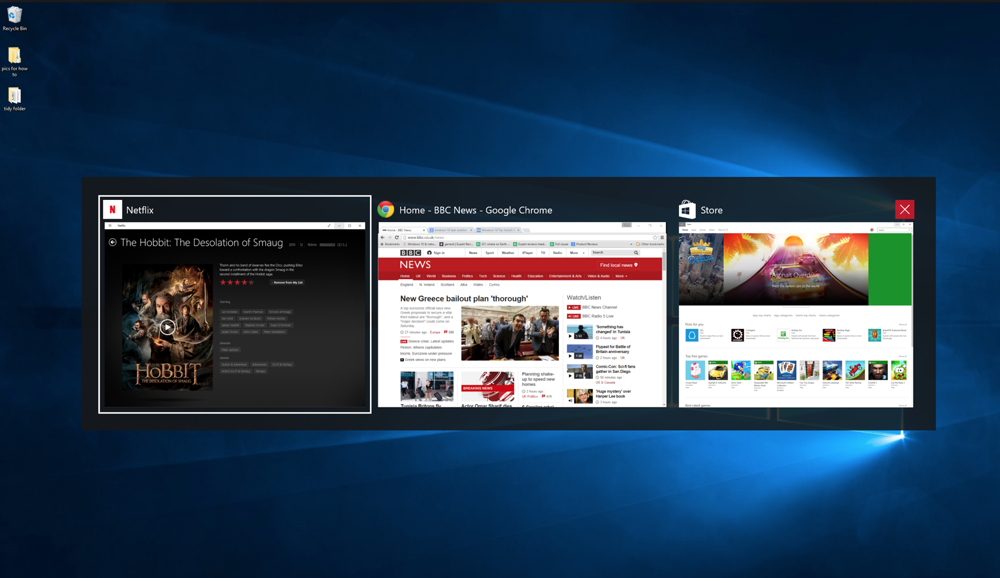
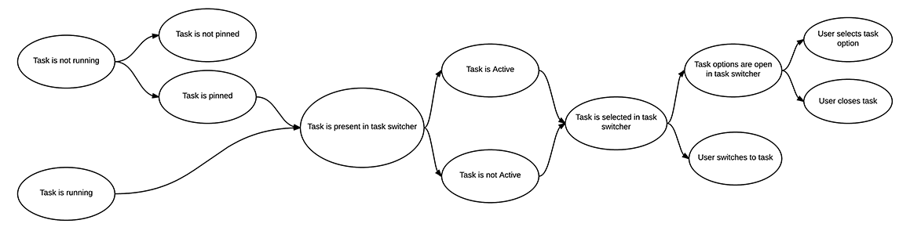
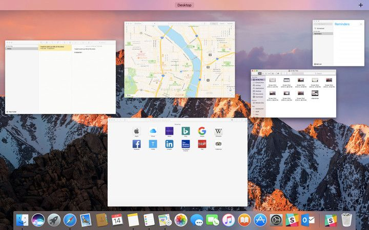
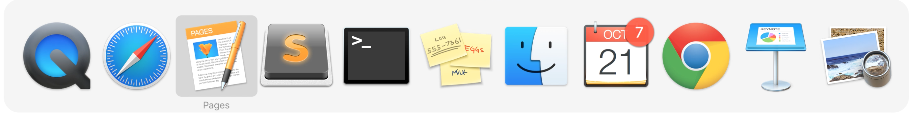
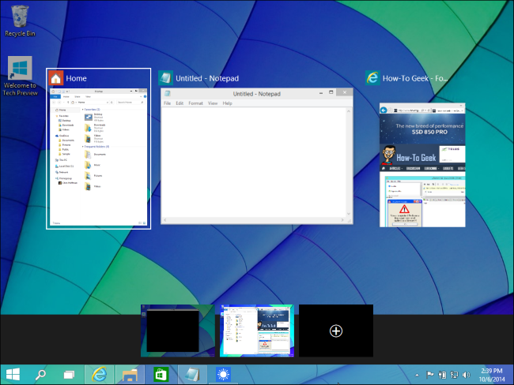
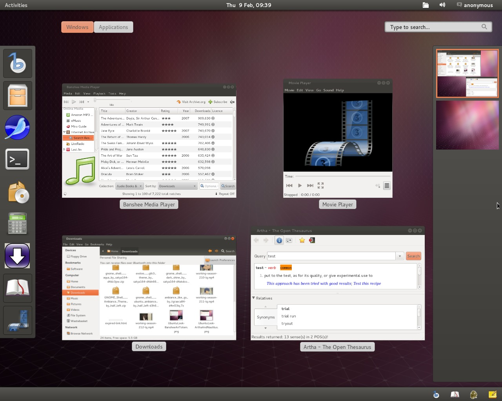

Typical Appearance
The task switcher can come in many forms, and is very dependent on the system, but there are three main appearances which exist on modern desktop OS’s . The first, and most important, is the task bar, or tray. This is a list of pictures of each application, which is always on the bottom or side or the screen. Each picture can be clicked on to toggle that task being opened or hidden, and often users can alternate click on the tasks to open up a menu with additional options, including ending tasks. The second common appearance is a feature that portrays all currently open programs (or their respective icons) in thumbnails across the screen. They typically prioritize the screen, displaying themselves in front of any and all open windows. Most systems also have a third window that gives more technical information on tasks. This is called Task Manager on Windows and Activity Monitor on Mac. This window can usually be opened with a keyboard shortcut and gives performance and resource usage information on individual tasks. Tasks can be terminated from this window, including tasks that are not responding and cannot be closed normally.
Example of a desktop task switcher (Windows 10) Typical Behavior
A fairly common way to use the task switcher is through a hot key that would bring up all the applications that are currently running. The specifics of this vary by system, but the hotkey is often good for switching between two Windows, or other tasks using the keyboard only and not the mouse. After using the hot key, you simply click on which application you would like to switch to. An example of this would be pressing ALT+Tab in windows, which would bring up the apps in that grid like structure that is shown on the Windows 10 example in the “Typical Appearance” section. In the older versions of iOS, double tapping the home button would reveal a task bar on the bottom of the screen. In the more recent versions of iOS, double tapping the home button would reveal the applications in a single row where you can swipe left and right to see which applications are running. From there, you would simply tap which application you would want to switch to. Below is a video showing off the task switcher in OSX. The taskbar pops up, taking priority of the screen, and the user can navigate to the left or to the right, quit tasks, hide them, or quickly "alt/tab" back and forth between a pair of tasks.
Component In Action
Below is a video showing off the task switcher in OSX. The taskbar pops up, taking priority of the screen, and the user can navigate to the left or to the right, quit tasks, hide them, or quickly "alt/tab" back and forth between a pair of tasks.
Events
There are only a few simple events when talking about Task Switcher. The most relevant, basic task launcher event is to select the new open app and switch to it. Because switching between applications is a fairly simple action that is heavily used, it should not require the user to perform many steps. First of all, the task switcher is either onscreen or offscreen. If a user hovers over a task, it becomes selected. The previous task then becomes unselected since only one task can be selected at a time hence task switcher.
State Diagram
Keeping in mind that only one task can be selected at a time; Task switcher states depend on the functionality of the switcher. As a general overview, we can say that there are only 5 different states: Task not running, Task running and active, Task running and non-active, Task selected in task switcher, and Task options panel selected in task switcher. A task must be selected in order for it to be launched, which occurs on key release or it’s platform-specific way selection. However, if the task switcher is active onscreen, a user has the option to interact with each task, but they are never disabled if the task launcher is open. It is important to remember that in the taskbar/tray, tasks not currently running can still be selected, open, or shown options.
Variants
Switching tasks is a standard operation on most devices. Below is a list illustrating the broad ways to accomplish task switching:
- Mission Control, an OSX variant, displays all open windows in thumbnail view across the screen. The difference is that there are no shortcuts to navigate between currently open windows, and you get a preview of the conent of each open task, rather than just the task icon. They are not aligned neatly across the middle of the screen, but scattered. A user can click on any task to switch to it. Also Mac OS has a desktop switcher, which can switch between multiple virtual populated desktops, instead of individual tasks. More information can be found in Platform-Specific Instances.
- Most smartphones have a task switcher. When launched, gesture-based controls allows the user to cycle through all open apps, and when they find the one they want to open, they tap on it to open it. Also it is important to mention that task switchers on mobile OS’s are very different for each platform, and do not look the same as on desktops.
- Using Voice Navigation (i.e. Siri) and vocally ask to "open" a specific task.
There are different components all together that allow switching between apps, some examples are:
Task Launcher (the user clicks on an application to open it) and the command line.
Priority Metrics
-
Learnability
Its main function of switching tasks should be intuitive. Once the task switcher is active, there should be no confusion and no series of extra steps to accomplish switching to a different task. While switching tasks is relatively straightforward, the task switcher hotkey is more difficult to learn. Firstly, the user may not even know that this method exists, and if he/she does, must first discover the hotkey. Even then it takes a bit to get used to the single button control, and the user will likely take a few tries to switch the wanted task. The task manager is a bit more complicated as it shows more detailed statistics and information, which the user may not understand. There is also the same issue of finding how to get to the task switcher in the first place. However, the most common use of the task manager, force ending a task, is fairly easy to learn, as there is usually an obvious button. Learnability is important, but assuming a user will be using any given OS multiple times, learnability is only an issue at the outset and is not as important as efficiency, which will always be a concern.
-
Efficiency
All three versions of task switchers should be very efficient. There are little to no intermediate states between the user and his/her goal. That being said, each of the three versions is more efficient for different things. The task bar is the generally most efficient as it is always on screen (if not auto-hidden) and shows all tasks in one view. The hotkey is most efficient for switching back and forth between two tasks, and is also the best solution to switching out of a full screen application, where the taskbar is hidden. The task manager is not very efficient at switching tasks, neither is it the most efficient at closing tasks, because it takes time to come up and navigate to the wanted task, however it is the most powerful, and must be used when the other methods are not working. Because the task switcher is so often used, efficiency is the most important metric.
-
Errors
The taskbar should have few errors, as it is fairly simple. However, users could often accidentally open a pinned task by misclicking, or accidentally close or switch away from a task they want open. The hot key has the error or hitting the key too many or few times, and therefore switching to the wrong task. The task manager takes more effort to open and I cannot think of any regularly occurring errors. Errors are definitely a concern for any given task switcher. Each common error is a decrease in overall productivity.
-
Memorability
Memorability would be the biggest hurdle, as users need to memorize the input to launch it. Once that one input is memorized, there should not be any confusion on what to do next. All three versions of the task switcher should be easy to remember. They are all fairly simple mechanisms, and they always function the same no matter what or how many tasks are open.
-
Satisfaction
If any usability metric is least important for a task switcher, it is probably satisfaction. The action of switching a task speaks for itself and there is little need for feedback other than to do its job quickly and efficiently. The user should feel that switching tasks is effortless, and feel a sense of "flow" as they are hopping between tasks. If the other metrics are satisfied for any given task switcher, satisfaction will follow.
Key Characteristics
I think the most important IxD principles every task switcher should adopt are Efficiency, Feedback, and Simplicity.
Efficiency – A good task switcher should prioritize efficiency and should be accessible from any screen or application. It should have the ability to switch between, or kill tasks in 1 or 2 steps since task switching is a heavily used action. Common task switcher features include representations of the running tasks, icons for example, and a button to quit them. The user should be able to switch to any given task with as few clicks as possible, and the switching action should be a quick process without any unnecessary transitions or animations. Switching tasks should be a simple, easy to learn task, and should function the same regardless of how many or what type of tasks are active.
Feedback – Feedback is a very important IxD principle that a task switcher must adopt. Users should never be doubtful of these two scenarios: 1: a current task is highlighted, and ready to be opened on key release 2: all other tasks are not selected, so as there is no confusion as to which task will be opened Should these scenarios be inconsistent and the task switcher deems unreliable, the user will require much more time when attempting to switch tasks due to uncertainty in his interface’s function.
Simplicity – Simplicity is also an important IxD principle to implement in task switcher. Users should have zero problems distinguishing which tasks are active, which task is currently selected, how to select a different task, and how to quit a running task.
Platform-Specific Instances
Below are some examples of platform-specific instances.


There are two main ways a user can use task switching in OS X. There are no differences between task switcher in El Capitan and task switcher in Sierra.
Standard Task Switching
The user presses and holds the Command (CMD) key, and then presses the Tab key to bring up the task switcher. The task switcher appears large on the screen, showing all open applications and only one selected task. The task switcher is only active and accessible as long as the user holds down the CMD key. The user can then decide to perform any of these options:
- Release both the CMD and Tab keys to switch to the highlighted app
-
Cycle through the currently open applications by tapping either
Tab/Right Arrowkey to cycle right, orShiftkey and tappingTab/`/Left Arrowkey to cycle left - Enter Expose Mode by hitting either the
UporDownarrow key. - Hide the selected application by hitting the
Hkey. - Quit/Kill the selected application by hitting the
Qkey.
Although there are many shortcuts to accomplish multiple tasks, for the sake of simply "task switching" only the first three bullet points are relevant. For the sake of completeness, if the user decided to cycle right, the new state would be:
The selected task/app is the only one that has text underneath, and is highlighted by a light grey box around the icon.
An example of cycling right to the next application
The user has three different options to launch the Mission Control task switcher:
- Tap the F3 key
- Hold down the
Control (Ctrl)key and tap theUp Arrowkey - Swipe up acorss the trackpad using four fingers
Mission Control is a huge improvement from Apple’s OS app, Spaces, regarding task switching. Both Mission Control and Spaces were more relevant for window management, but some users use Mission Control as a task switcher as well. Mission Control displays small desktop thumbnails at the top of the screen, where users can see a preview of what apps are open and active in each desktop page. Users can then hover their mouse over an app, which will then highlight the app page and bring up a label of the app/file name. In simpler terms, Mission Control is better used for window organization, but has the ability to act as a small task switcher.
Picture in Picture - Sierra Exclusive
In OSX Sierra, Apple introduced Picture in Picture (PiP), a feature that allows users to layer a persistent vieo on top of their mac workspace. If you switch apps, the video window doesn’t get buried under everything else on your screen. PiP is available in two applications: Safari and iTunes.
How to launch PiP in Safari- Open a video in Safari that is compatible with PiP
- Play the video
- Find and click the PiP button and the video should move to a corner of your screen.


Once your video is simultaneously playing while you work on other apps, you can:
- Control playback in PiP by clicking the
PlayorPausebutton. - Resize the PiP window by clicking and dragging a corner of the window
- Move the Pip window by clicking and moving it to another corner of your screen (as you would any other window)
- Shut down PiP mode by clicking the PiP button again, or clicking the X in the top left corner of the Pip Window.
- Open a video in iTunes
- Play the video
- Find and click the PiP button and the video should move to a corner of your screen.


Once your video is up and playing in a corner of your desktop, you can perform the same actions as if PiP were playing a video from Safari.
The most common way to switch tasks in iOS is to double tap the home button, which will have all the apps that are currently running appear in a single row. From there, the user can swipe left and right to see which applications they can switch to, then taps on whichever application intended for use. There are a few variants for switching tasks quickly in iOS that include:
- "Slide Over"
- "Split View"
- "Picture in Picture"
To get a better feel for the variants of task switching in iOS, the video below demonstrates how each variant works.
Task Switching Through"Slide Over"
While the user is using an application, slide over allows the user to use another application without quitting the original application the user is in. All the user needs to do is swipe from the right side of the screen towards the center of the screen in order to use another application. If the user wants to switch the application that Slide Over pulls up, the user simply swipes down from the top right side of the screen. This will bring up a taskbar that displays all the applications that the user can switch to, as shown below:


Task Switching Through "Split View"
Split View allows the user to use two apps at once. Using Split View is very similar to using Slide Over. The user would swipe from the right side of the screen towards the center of the screen to enable Slide Over. Remember that in Slide Over, there is an application running in the background while the user is currently using another application. The user then taps the middle of the screen divider, which causes the application running in the background and the application that the user is using to appear side by side. The user can now use both applications at once, as shown below:

Task Switching Through "Picture in Picture"
Picture in Picture allows the user to watch movies or use FaceTime while using another application. While the user is watching a movie or using FaceTime, they press the home button, which will put the movie or FaceTime into a smaller window and bring the user to the home screen in the background. From there, the user picks whichever application they would like to run. The application they pick will run in the background while the movie or FaceTime continues to run in that smaller window. The user can drag that smaller window to whichever part of the screen they’d like. They can also make the window smaller or bigger, shown below:


The three versions of the task switcher that I have mentioned are present on Windows 8.1. There is also a “Switch list” feature as part of Windows 8’s “Hot Corners” but I will not be covering that as it is horrible and I have it disabled. I will cover the other three in specific detail.
Using the TaskbarThe taskbar is pretty standard; apps can be pinned for quick access, and can be opened, closed and switched at ease. Hovering over an app opens a live preview of it above the taskbar. Hovering over the preview brings up a full size preview of the window or app. Apps have an options menu accessed by right clicking on them and the taskbar itself also has its own options menu accessed by right clicking on a blank spot. There is also the Windows logo in the corner which opens the start menu, and on the other side of the task bar is a clock with the date, and also a notification area, where system settings, such as wifi, sound levels, and power settings, can be accessed along with hidden apps such as graphics settings, and apps which do not appear on the main taskbar, but are docked, and still running.
The Microsoft windows dev guidelines state "The taskbar is the access point for programs displayed on the desktop. With the new Windows 7 taskbar features, users can give commands, access resources, and view program status directly from the taskbar. The taskbar is the access point for programs displayed on the desktop, even if the program is minimized. Such programs are said to have desktop presence. With the taskbar, users can view the open primary windows and certain secondary windows on the desktop and can quickly switch between them."
Switching Tasks Using Hotkeys
The hotkey in Windows 8.1 is alt+tab. This opens a temporary interface where lives preview screens of the apps are visible
including window titles. Pressing alt+tab once will switch back and forth between the most recent opened app. Apps
can be cycled through by each press of tab while holding alt, if held on one app, the the window will open in a full
scale preview. Once the user lets go of alt, the selected app is switched to.
The task manager in Windows 8.1 can be accessed by selecting it from a menu accessed through the hotkey ctrl+alt+del.
It can also be accessed through a menu option by right clicking on the taskbar. Although it was available in previous
versions of Windows, task switching is not a main function of the task manager in Windows 8.1. It is primarily for
ending tasks and obtaining application and system performance information.


Some of the different ways to switch between tasks on Windows 10: taskbar (left), task view (middle), task manager (right).
In Windows 10, although there are no new ways for a user to switch between tasks in comparison to Windows 8.1, the visuals of the different ways to switch between various applications and windows differ. There are three different ways a user can switch between tasks on Windows 10:
- Using the Taskbar
- Task View
- Task Manager
To switch between applications, the user can use the taskbar. By simply scrolling over the taskbar, above the icon of an application, the user can see a preview of the windows open in the application. When the user keeps the mouse hovered over a particular application's window, the user gets to preview the window as if it were the only window currently open. To select the window, the user simply clicks on the desired window in the preview. The window is now open and brought to the forefront of the screen. An example of using the taskbar as a task switcher can be seen below:

Using the taskbar to preview and switch between different windows.
Another way to preview and switch between applications and windows is by using Task View. One way to access Task View is by using a laptop trackpad. By swiping upwards with three fingers on the trackpad, the user is greeted with a full screen idle interface, Task View, that shows the windows of currently running applications. The user is then able to mouse over the windows, which are highlighted according to the location of the mouse. To select a window, the user simply clicks the desired window, which then is brought to the forefront of the screen. An example of using the trackpad can be seen below:
|
Youtube clip illustrating using a trackpad to view and switch between windows. |

Using the trackpad to access Task View. |
However, if the user is using Windows 10 on a desktop or is not able to use the laptop trackpad, an alternate way to switch between windows is the Task View icon, located on the taskbar. The Task View icon allows the user to access the same full screen idle interface mentioned above. Below is an example of the user using the Task View icon on the taskbar:

Using the Task View icon located on the taskbar.
Using Task Manager
Although it is not necessarily intended to be the main way for a user to switch between tasks, Task Manager is viable way to
Ubuntu

Android "Recent Tasks" Switcher
Anthony Keba
Key Characteristics:
Android's Material Design Task Switcher goes by the name of the Recent Apps List. However nonetheless, the Recent Apps List is still very much so a task switcher.
Android's Task switcher is accessed in many different ways, depending on the version of Android that is currently running on a device. For this example, we will be running stock Android, on an LG G5.
On this device, the task switcher is accessed by pressing the rounded square button at the bottom of the screen, by pressing this button, the user is brought to the "Recent Apps List"
The task switcher is availible any time, by pressing the bottom right square button
Here we see a common example of what Android's Task Switcher normally looks like
This list is automatically populated with the apps that a user has open at any time. It serves as a way of quickly switching between different apps without navigating to the app drawer, or of closing apps that the user currently has open.
Note Several important design decisions:
- the Picture-In-Picture rendering for each app, this provides the user with a contextual clue for what the experience will be like, should the devide to launch that app
- the carousel design treads the line between displaying a large amount of content, while still making it abundantly clear that there is additional information that the user can still explore by swiping up or down
- The app name remains present at the top of each PiP window as the user scrolls through, and any additional options availible (pinning an app, enabling multi-window, and closing it) are always availible as well
- Although it is not apparent from this image, the user is able to swipe left or right on any of the cards, in order to close the app. This functionality is accentuated by the empty space on either side of the card, implying that movement may potentially take place
Note: The user's background image remains present in the background. There is a noticable darkening however to indicate that they are no longer on that view, and the taskbar is still visible.
Here, there are several apps open for the user to potentially interact with. They are (in order of apperance): Contacts, Calculator, Chrome, and Facebook. The user is easily able to determine the name of each app.
They are also presented with the app icon as an additional indicator of which app is presented to them. For two of these apps (Calculator and Chrome), multi-window mode is supported. The UI reflects that through the presence of a button containing two rectanlges.
Additionally, note the presence of a "CLEAR ALL" button, for when the user has too many tabs to efficiently close one at a time.
Use Case:
Here we see a use case example, of a sample user scrolling through several apps they have open. Initially the user selects the Recent Apps list,
and taps it to reveal a list of all apps that are currently open. From here, the user is able to scroll through the list of currently open apps by swiping up or down.
Swiping left or right will close any app that is currently open, and clicking on any app will switch to it.
Credits & References
Juell, Thor. "Viewing Your Windows Programs without Seeing Windows." VMware Fusion Blog. VMWare, 10 Nov. 2011. Web. 23 Oct. 2015.
Barton, Seth. "How to Switch Tasks Faster in Windows 10." Expert Reviews. N.p., 25 July 2015. Web. 23 Oct. 2015.
"IOS 9's Redesigned Task Switcher." YouTube, 16 June 2015. Web. 23 Oct. 2015.
OSXDaily. "Secrets of the Command-Tab Mac Application Switcher | OSXDaily." OS X Daily Secrets of the CommandTab Mac Application Switcher. OSXDAILY, 17 Nov. 2009. Web. 23 Oct. 2015.
Apple. "Apple." Use Mission Control on Your Mac. Apple, n.d. Web. 23 Oct. 2015.
"About Multitasking on Your IPhone, IPad, and IPod Touch." Apple Support. N.p., 14 Sept. 2016. Web. 26 Oct. 2016.
https://www.youtube.com/watch?v=jorwzOsPAYs